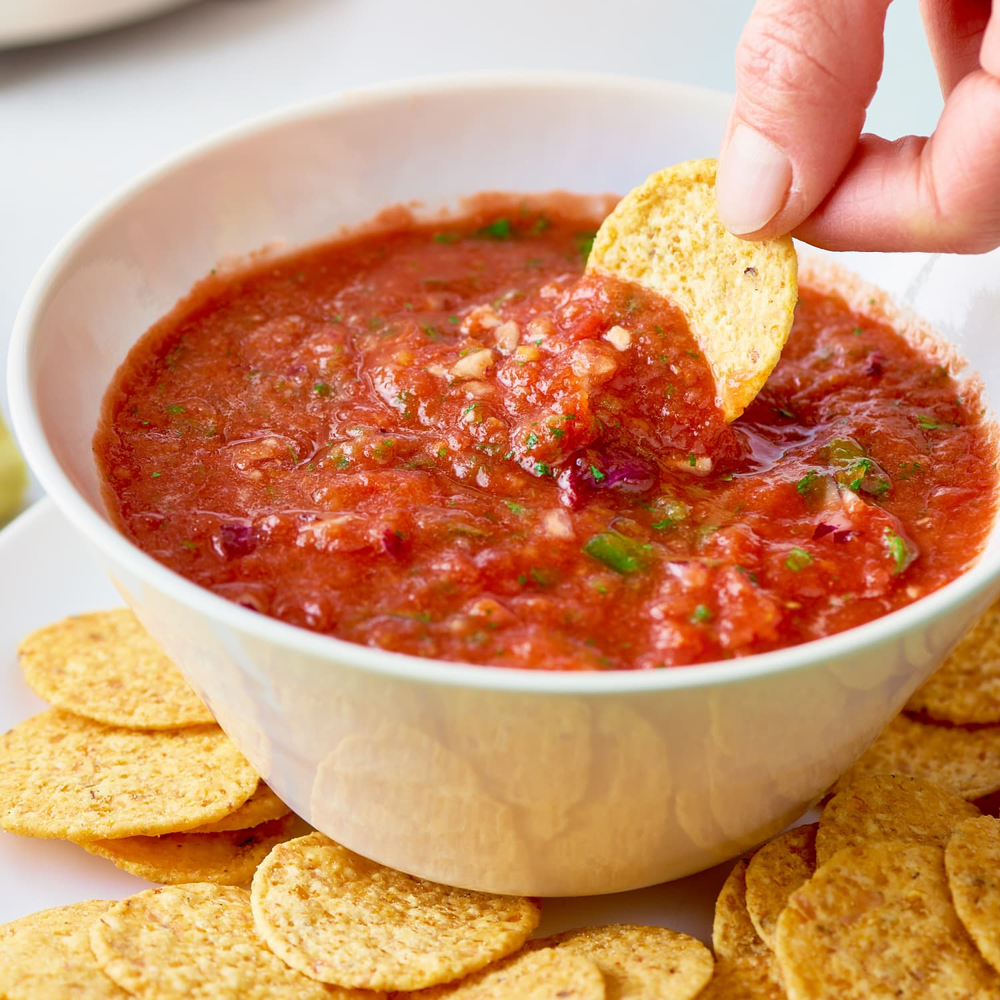

Salsa

Ingredients
- 10-12 Large tomatoes
- 2-3 jalepenos
- 1 white onion
- 1 tablespoon minced garlic
- 1-2 tablespoons cilantro
- salt
- pepper
Instructions
- Roast the tomatoes for 15-20 minutes on high heat.
- Remove the skin from the tomatoes, easiest when done after roasting and tomatoes are still hot. Be careful of burns.
- Roughly chop all vegetables, and cilantro
- Remove seeds of jalepenos if you desire a less spicy salsa.
- Add all vegetables, cilantro and minced garlic to blender.
- Blend according to desired salsa consistency.
- If blender is too small, it is okay to do this in batches and mix all of this together in large bowl.
- Keep refrigerated.
- Add to eggs, tacos, or enjoy as a snack with your favorite tortilla chips.